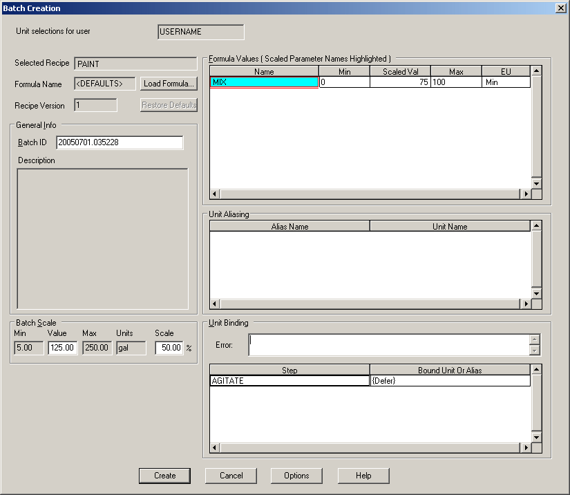

Scaling batches
Scaling a batch is the method used to produce a quantity other than the default size recipe. The batch scale is the percent of the maximum batch size specified on the Recipe Properties dialog. Instead of running a normal batch, the operator specifies a percentage of a given recipe to be produced. This task is performed from the Batch Creation dialog as a batch is being added to the Batch List, and can be completed either in the Batch Operator Interface or by using the DeltaV Operate Batch controls.

Scaling a batch is possible only when the recipe is configured to allow scaling. To be able to scale a batch, there must be at least one parameter in the recipe that can be scaled. For example, the procedure PAINT contains the unit procedures UP_BLEND and UP_COLOR. The unit procedures contain the operations OP_CHARGE, OP_COLOR, and OP_FINISH. In order to scale PAINT, at least one parameter in any of the unit procedures or operations called by PAINT must have a scalable parameter. If no scalable parameter exists, then the batch is not scaled and the selected formula's parameter values are used.
When scaling, you can not exceed the min or max limits of any one of the scalable parameters in the recipe. If the batch scale value causes a parameter to become greater or less than the max and min limits of that parameter, it is highlighted in red in the Batch Creation dialog. The operator must manually change that parameter (thereby creating a custom formula) or change the batch scale value so the parameter remains within its limits. A batch cannot be loaded when scaling causes any parameter value (including those parameters not deferred to the highest level of the recipe) to be outside of the limit range.
Since only positive percentages are allowed, scaled negative values are always a negative number (for example, -50 * 50% = -25). The scaled negative values must fall within the minimum and maximum range of the parameter.